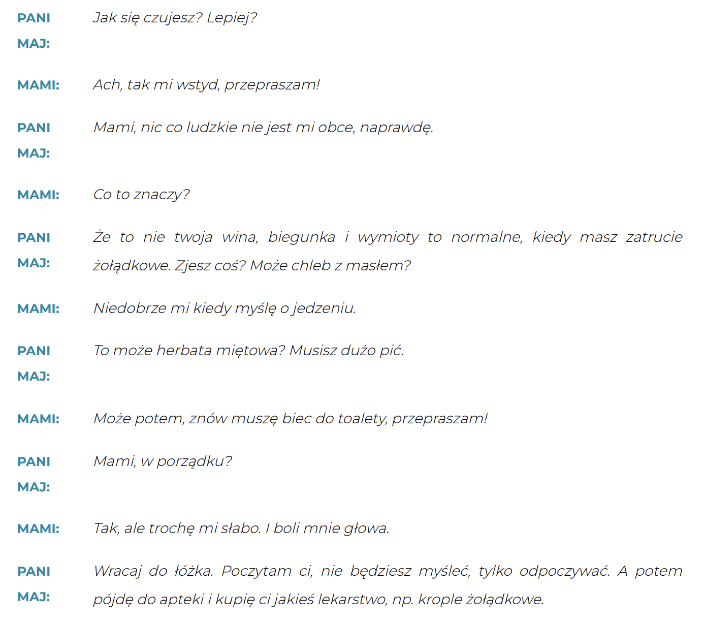
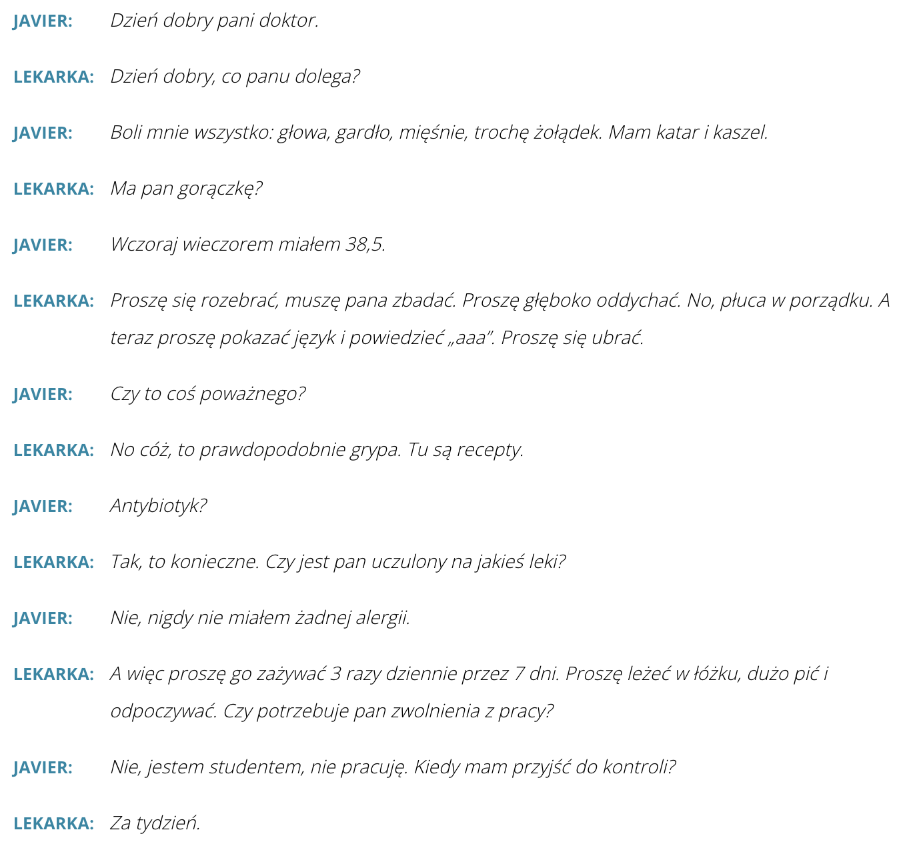
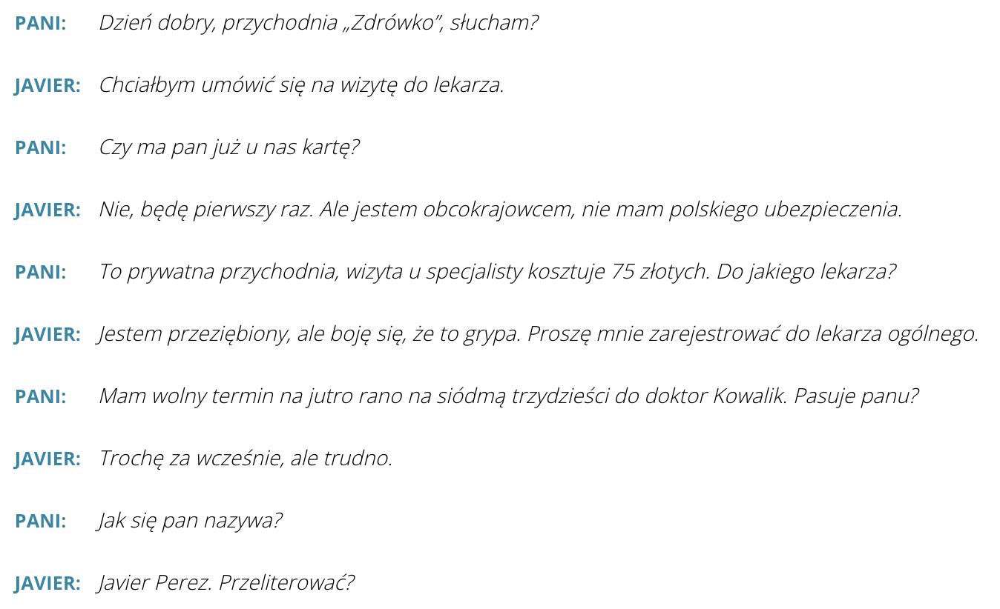
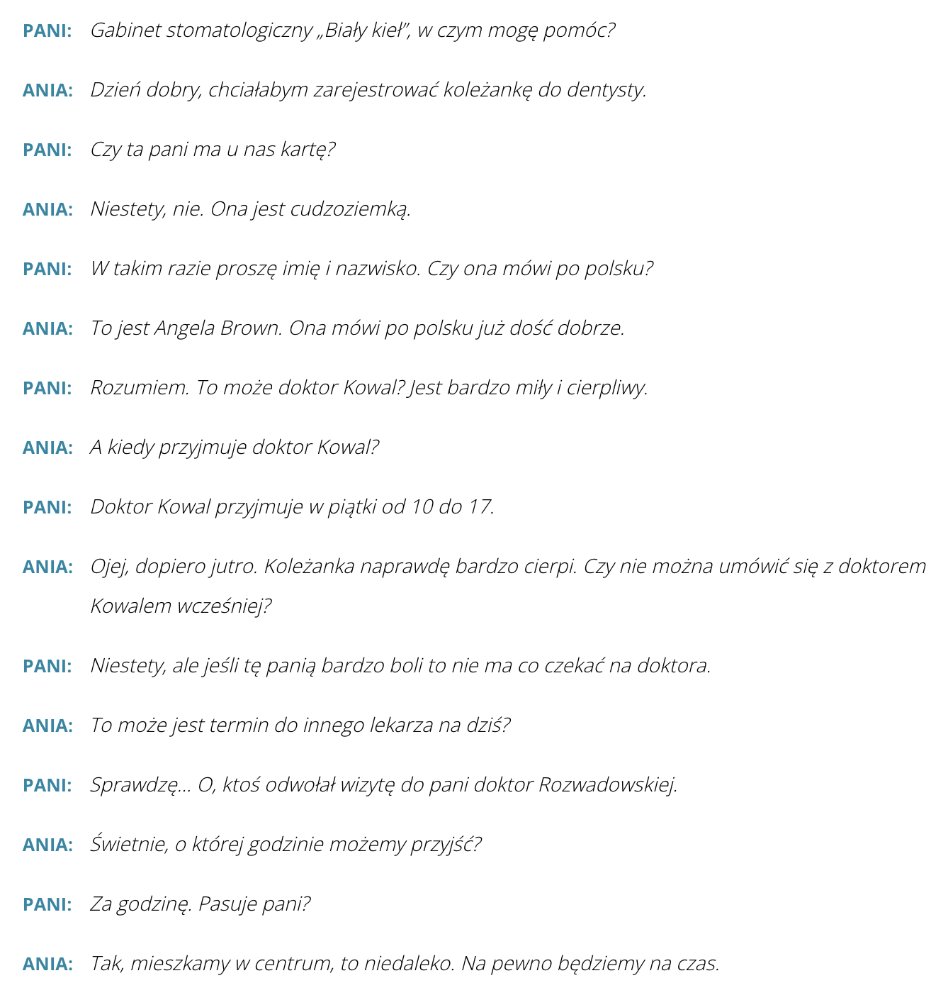
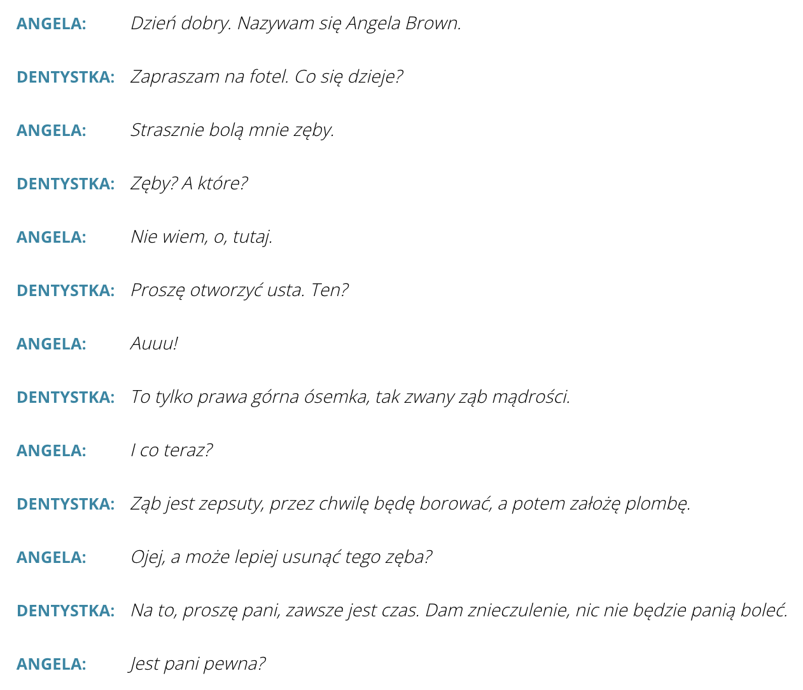

Krok Po Kroku 1
Temat 25 - Ani ręka, ani nogą(u lekarza)
A. "W mądrej głowie dość dwie słowie"
B. Zdrowie jest najważniejsze
C. Przypadek Mami
D. Przypadek Javiera
E. Przypadek Angeli
F. Przypadek Toma
A. "W mądrej głowie dość dwie słowie"
słownistwo - A. "W mądrej głowie dość dwie słowie" >>

«Ciało» (Тело)
голова -
głowa
волосы -
włosy
бровь -
brew
глаз -
oko
нос -
nos
ухо -
ucho
подбородок -
broda
щека -
policzek
рот / губы -
usta
шея -
szyja
плечо (верхняя часть) -
bark
подмышка -
pacha
плечо (вся верхняя часть руки) -
ramię
предплечье -
przedramię
подъём стопы -
podbicie
пальцы ног -
palce stopy
подошва -
podeszwa
запястье -
nadgarstek
ладонь -
dłoń
пальцы (руки) -
palce
грудная клетка -
klatka piersiowa
живот -
brzuch
пупок -
pępek
бедро (тазовая часть) -
biodro
пах -
pachwina
рука -
ręka
гениталии -
genitalia
бедро (верхняя часть ноги) -
udo
колено -
kolano
икра -
łydka
щиколотка -
kostka
пятка -
pięta
ступня -
stopa
нога (целиком) -
noga
🧬 Медицинские термины:
опухоль (новообразование) -
nowotwór
опухоль / шишка / бородавка -
guz
рак (злокачественная опухоль) -
rak
щитовидная железа -
tarczyca
мышцы -
mięśnie
желудок -
żołądek
отравление -
zatrucie
симптомы -
objawy
рвота -
wymioty
запор -
zaparcie
диарея -
biegunka
IDIOMY
W języku polskim występuje wiele idiomów, należy jednak pamiętać, że nie używamy ich
tak powszechnie, jak w języku angielskim. Często tworzymy idiomy z rzeczownikami oznaczającymi
części ciała.
(В польском языке идиомы используются реже, чем в английском, и чаще всего — в
неформальной речи, а также с юмористическим оттенком.)
🧠 Идиомы с частями тела:
-
Mieć dwie lewe ręce
— Иметь две левые руки
🔸 Значение: Быть неумелым, ничего не уметь делать руками, всё ронять, ломать и т.п.
📌 Пример: On ma dwie lewe ręce do majsterkowania.
На новой работе нужно быть очень внимательным.
-
Mieć oczy i uszy otwarte
— Иметь открытые глаза и уши
🔸 Значение: Быть внимательным, настороженным, всё замечать.
📌 Пример: Musisz mieć oczy i uszy otwarte w nowej pracy.
На новой работе нужно быть очень внимательным.
-
Nie kiwnąć palcem
— Не пошевелить пальцем
🔸 Значение: Совсем ничего не сделать, не помочь.
📌 Пример: 📌 On nie kiwnął palcem, żeby nam pomóc!
Он и пальцем не пошевелил, чтобы помочь нам!
-
Złapać kogoś za język
— Поймать кого-то за язык
🔸 Значение: Уговорить кого-то что-то сказать, разговорить.
📌 Пример: W końcu złapałem go za język i opowiedział wszystko.
Наконец-то я разговорил его, и он всё рассказал.
🦁 Идиомы по схеме „przymiotnik + jak + rzeczownik”:
-
Odważny jak lew
— Смелый как лев
🔸 Значение: Очень храбрый человек.
-
Uparty jak osioł
— Упрямый как осёл
🔸 Значение: Чрезмерно упрямый, не поддаётся убеждению.
-
Głodny jak wilk
— Голодный как волк
🔸 Значение: Очень голодный.
📌 Пример: 📌 Po treningu jestem głodny jak wilk!
После тренировки я голодный как волк!
-
Cichy jak mysz pod miotłą
— Тихий как мышь под веником
🔸 Значение: Очень тихий, незаметный, скромный человек.
📌 Пример: 📌 Ten chłopiec jest cichy jak mysz pod miotłą.
Этот мальчик — тише воды, ниже травы.

Na przyklad
- do góry nogami - życie do góry nogami
- głowa państwa - Głowa państwa w Polsce jest prezydent.
- leżeć do góry brzuchem - Dlaczego ty nic nie robisz, tylko leżysz do góry brzuchem?
- mieć oczy i uszy otwarte - Dobry dziennikarz zawsze powinien mieć oczy i uszy otwarte.
- strach ma wielkie oczy - Dzieci w nocy wszystkiego się boją, bo strach ma wielkie oczy.
- co dwie głowy to nie jedna - две головы лучше, чем одна
- do rąk własnych - лично в руки
- dwie lewe ręce - руки не из того места
- głowa do góry - Выше нос!
- kłamstwo ma krótkie nogi - на лжи далеко не уедешь
B. Zdrowie jest najważniejsze
słownistwo - B. Zdrowie jest najważniejsze >>
CZASOWNIK: BOLEĆ
Czasownik boleć występuje tylko w 3 osobie liczby pojedynczej i mnogiej.
Co kogo boli?
спряжение глагола „powinien” (должен)
Это форма, которая указывает на обязанность, совет или необходимость, но в прошлом.
💡 Структура:
| Лицо | Мужской род (r. męski) | Женский род (r. żeński) |
|---|---|---|
| Ja (я) | powinienem ✔️ | powinnam ✔️ |
| Ty (ты) | powinieneś ✔️ | powinnaś ✔️ |
| On / Ona (он / она) | powinien | powinna ✔️ |
| My (мы) | powinniśmy ✔️ | powinnyśmy ✔️ |
| Oni / One (они) | powinni | powinny |
C. Przypadek Mami
Dialog 1
1. Co ci jest?
🔹 Дословно: Что с тобой?
🔹 Значение: Общий вопрос о состоянии — когда видно, что человеку плохо, что-то не так.
🔹 Контекст:
- Видишь, что кто-то бледный или расстроенный.
- Спрашиваешь: "Co ci jest?"
🔹 Можно перевести как:
- Что с тобой случилось?
- Что с тобой?

2. Co cię boli?
🔹 Дословно: Что у тебя болит?
🔹 Значение: Конкретный вопрос о боли — ты хочешь знать, где именно болит.
🔹 Контекст:
- Ребёнок жалуется на плохое самочувствие.
- Родитель спрашивает: "Co cię boli?"
🔹 Можно перевести как:
- Что у тебя болит?
3. Co ci dolega?
🔹 Дословно: Что тебе досаждает/что тебя тревожит?
🔹 Значение: Более формальный или медицинский вариант, используется врачами, когда интересуются симптомами.
🔹 Контекст:
- На приёме у врача.
- Доктор спрашивает: "Co ci dolega?"
🔹 Можно перевести как:
- На что ты жалуешься?
- Что тебя беспокоит?
D. Przypadek Javiera
słownistwo - D. Przypadek Javiera >>
Dialog 2
Dialog 3
📌 1. "Boli kogoś coś" – кого-то что-то болит
Здесь "coś" в именительном падеже (mianownik) — то есть то, что болит.
🔹 Примеры:
- Bolą mnie mięśnie. – У меня болят мышцы
("болят меня мышцы" → дословно)
- Czy boli panią głowa? – У вас болит голова?
🔸 "Mnie", "panią", "cię" — объект боли (кому больно).
🔸 "Głowa", "mięśnie" — то, что болит (в именительном падеже).
📌 2. "Mieć + biernik" – иметь + винительный падеж
Используется, когда говорим, что у кого-то есть симптом (температура, кашель, болезнь и т. д.)
🔹 Примеры:
- Czy ma pan temperaturę? – У вас есть температура?
- Ewa ma migrenę. – У Эвы мигрень.
- Ma pani bardzo wysokie ciśnienie. – У вас очень высокое давление.
Здесь используется винительный падеж (biernik): temperaturę, migrenę, ciśnienie.
📌 3. "Być + przymiotnik" – быть + прилагательное
Когда описываем состояние человека: болен, простужен, слаб и т.д.
🔹 Примеры:
- Jestem chory. – Я болен.
- Ona jest przeziębiona. – Она простужена.
- Jesteś słaby. – Ты слаб.
Прилагательные изменяются по роду и числу:
chory / chora / chorzy и т. д.
📌 4. "Jest komuś + przysłówek" – кому-то + наречие
Используется, чтобы описать физические ощущения (тошнит, жарко, плохо, душно и т.д.)
🔹 Примеры:
- Jest mi słabo. – Мне плохо (слабо).
- Jest jej duszno. – Ей душно.
- Jest mu niedobrze. – Ему нехорошо (тошнит / плохо).
🔸 Здесь "komuś" — в дательном падеже (mi, ci, jej, mu...)
🔸 "słabo, duszno, niedobrze" — наречия, описывающие ощущение.
E. Przypadek Angeli
słownistwo - E. Przypadek Angeli >>
Dialog 4
Dialog 5
📌 1. Dla wyrażenia ilości osób – чтобы выразить количество людей
Польский язык часто использует такие формы (trójka, czwórka, piątka и т.д.) вместо обычных числительных, когда речь идёт о группах людей.
🔹 Примеры:
- Mam trójkę dzieci. – У меня трое детей.
- Oni mają czwórkę przyjaciół. – У них четверо друзей.
- Nie możecie tu mieszkać w piątkę – jest was za dużo.
– Вы не можете жить здесь впятером — вас слишком много.
Обрати внимание:
- trójka, czwórka, piątka – формы числительных, которые склоняются
- w piątkę – наречие: впятером, втроём = w trójkę, w czwórkę и т.д.
📌 2. Numer czegoś – номер чего-то (автобуса, оценки, зуба, программы)
Эти формы также часто используются при указании номера чего-либо:
🔹 Примеры:
- Proszę jechać jedynką, a potem trzynastką.
– Пожалуйста, поезжайте на первом (автобусе), потом на тринадцатом.
- Oni mają czwórkę przyjaciół.Lubię słuchać Trójki.
– Я люблю слушать «Тройку» (третий канал Польского радио).
- Dostałam dziś szóstkę.
– Сегодня я получила шестёрку. (оценка)
📍 Это разговорный способ:
- jedynka = автобус №1
- trzynastka = автобус №13
- szóstka = оценка 6 (в польской системе 6 – лучшая)
F. Przypadek Toma
słownistwo - F. Przypadek Toma >>
📌 Глагол upaść – совершенный вид
значение: упасть, свалиться (однократное действие, уже произошло или произойдёт)
🔹 Другие роды:
- Ja upadłam – я упала (женщина)
- Ty upadłaś – ты упала (женщина)
- Ona upadła – она упала
- My upadłyśmy – мы упали (только женщины)
- Wy upadłyście – вы упали (только женщины)
- One upadły – они упали (женская группа)